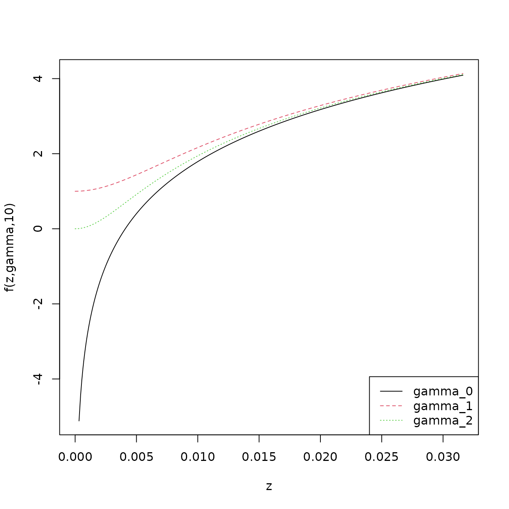
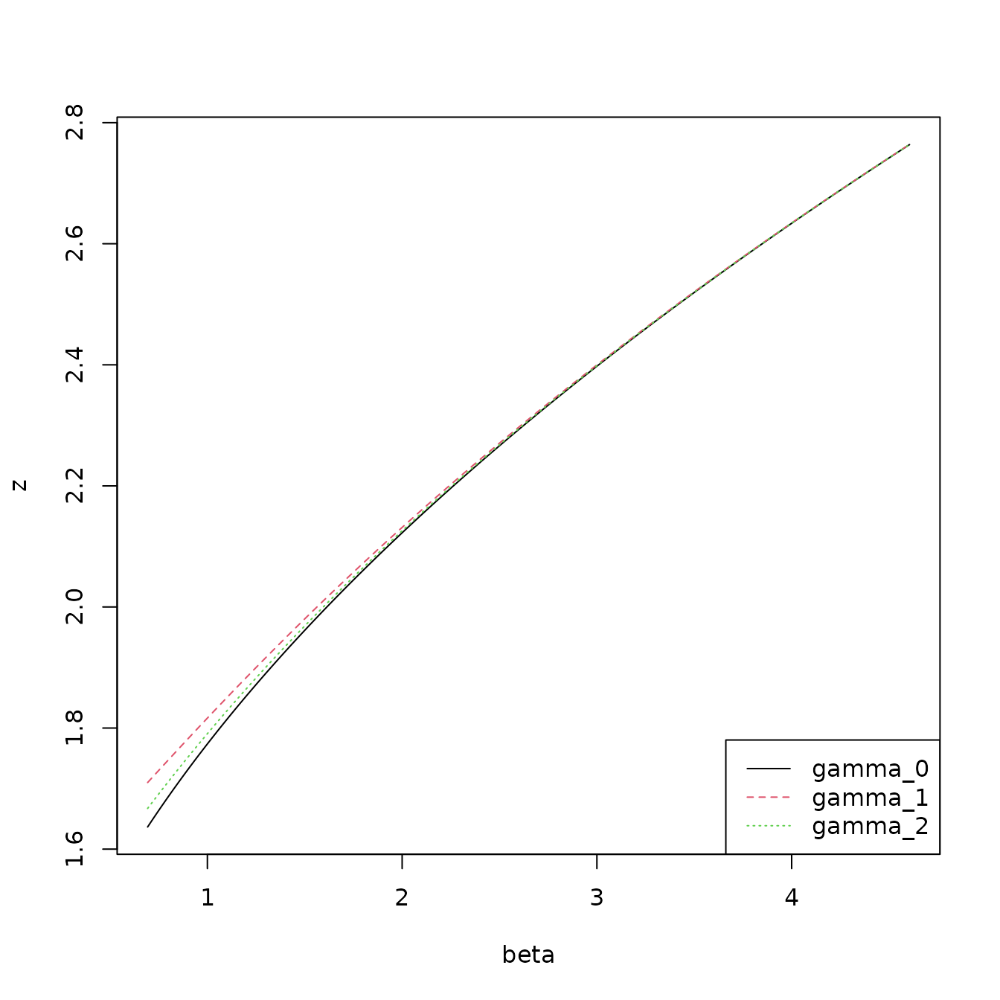
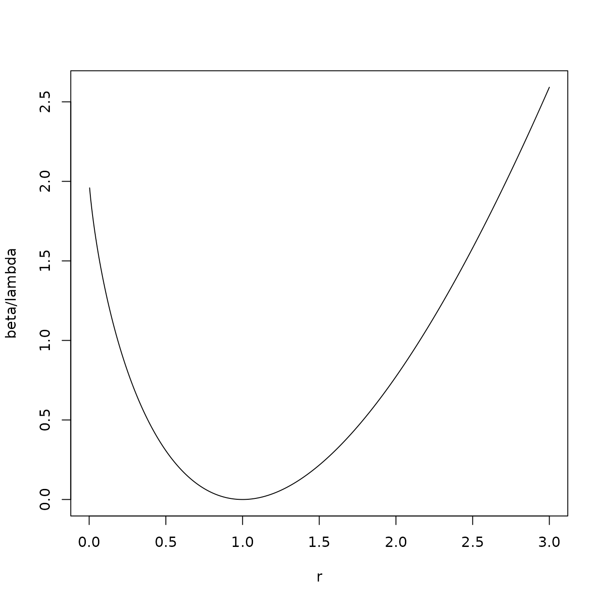

The purpose of this vignette is to present the calculations of the
costs for various distribution.
Univariate Independent Gaussian
Data belongs to group
whose time stamps are the set
can have additive mean anomaly
and multiplicative variance anomaly
which are common for
.
For
this gives
with the likelihood of of the
observations
being
The log-likelihood of
is then
with the cost being twice the negative log likelihood plus a penalty
giving
Anomaly in mean and varinace
Estimates
of
and
of
can be selected to minimise the cost by taking
and
Subsituting these into the cost gives
Anomaly in Mean
There is no change in variance so
.
Estimate of
is unchanged from that for an anomaly in mean and variance so the
cost
can be written as
Anomaly in Variance
These is no mean anomaly so
.
Estimate of
therfore changes to
and cost is
No Anomaly (Baseline)
Here
and
and there is no penalty so
Point anomaly
A point anomaly at time
is treated as a sinle time step with a variance anomaly. Naively the
cost could be computed using the formulea for a variance anomaly as
However the cost of the point anomaly should be higher then the
background cost when
is, in some sense, close to the background.
Follow Fisch et al. in intorducing a term
to control this. Using the standardised variable
the modified cost of a point anomaly is expressed as
Relating this to the background cost we see that point anomalies may
be accepted in the capa search when
This implies that
should be selected such that
The gradient wrt
is
Requiring
;
which maintains a positive gradient for small z_{t}^2; indicates that
there will no anomalies near 0.
Consider three different definitions of
.
- The non corection of
which allows point anomalies as z_{t}^2 approaches 0
- The correction
proposed by Fisch et al.
- The minimal correction
for which
.
To see the impact of the correct for small
the following figure shows
for
for the three options.

It is clear that the difference become small as
increases. This is supported by the plot below shows the value of
at which an point anomaly might occur as
varies. Area above the line are potential anomaly values.

Poisson
Data belongs to group
whose time stamps are the set
can have a multiplicative rate anomaly
which is common for
.
For
this gives
with the likelihood of of the
observations
being
The log-likelihood of
is then
with the cost being twice the negative log likelihood plus a penalty
giving
Anomaly in rate
Estimates
of
can be selected to minimise the cost by taking
This gives a cost of
No Anomaly (Baseline)
Here
and there is no penalty so
Point anomaly
A point anomaly at time
is treated as a single time step rate anomaly. Naively the cost could be
computed using the formulea for a rate anomaly with
giving
However the cost of the point anomaly should be higher then the
background cost when
is, in some sense, close to the background value of 1.
Comparing to the baseline cost for a single point shows that a point
anomaly will exist when
Rearrangement gives
$$\begin{equation}
\beta
<
2 \left( \lambda_{t} - y_{t} \right)
+ 2 y_{t} \left( \log\left(y_{t}\right) - \log\left(\lambda_{t}\right)
\right) \\
<
2 \lambda_{t} \left( 1 - r_{k} \right)
+ 2 y_{t} \log\left(r_{k}\right) \\
< 2 \lambda_{t} \left( 1 - r_{k} + r_{k} \log\left(r_{k}\right)
\right)
\end{equation}$$
The follwoing plot shows that selection of
can be selected as a multiple of
to avoid
being to close to 1.

Multivariate Gaussian
A vector of data
of length
follows a multivariate Gaussian with mean
and precision
.
Background
Without any anomalous periods the log liklihood is given by
or as a cost
Modelling anomalies
Consider the
th
of
anomalies occurs of consecuative time steps starting at time
and finished at
.
Anomalies do not overlap so
for all
To model change in variance let
be a
diagonal matrix where
if there exists
such that
and 1 otherwise.
Let
be a length
vector of mean changes and
a
matrix where
if
and zero otherwise.
Decomposing
such that
the costs including anomalies becomes
Solving for
and
Let
and
.
Using this the cost is
Since
is diagonal
For an non-anoalous time step
we see that
and
allowing the summation to be written
Using the identities for determinants gives
and
Subsituation of these terms into the cost function gives